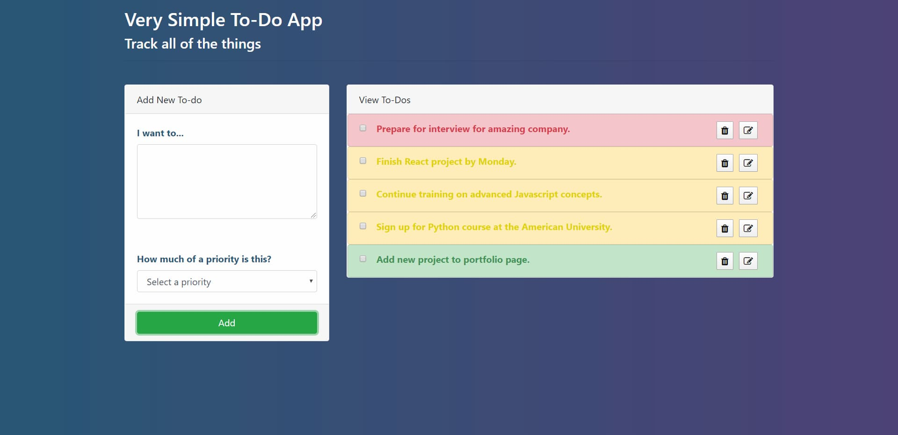

To-do app: keep track of all your stuff (Link to GitHub repo)
This simple to-do app allows users to keep track of all their tasks; users can create, edit, prioritize and delete tasks. This app was built with React and Node.js using a Bootstrap template. You can play with the app on Heroku or view the GitHub repo here.
